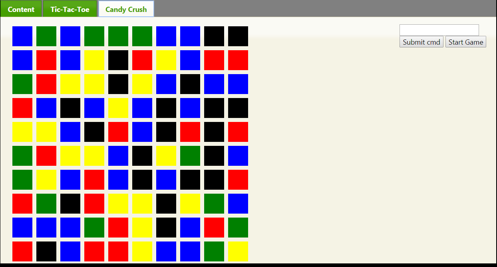

Summer 2013
While an intern at Netsocket, I learned professional project management and development in a real work environment. Additionally, I advanced my skills in Javascript, jQuery, and CSS. I learned valuable skills with professionals in the workplace. I practiced with the projects you see above, including a Candy-Crush-type game and a computer player for Tic-Tac-Toe.
Technologies used:
- HTML
- CSS
- Javascript & jQuery